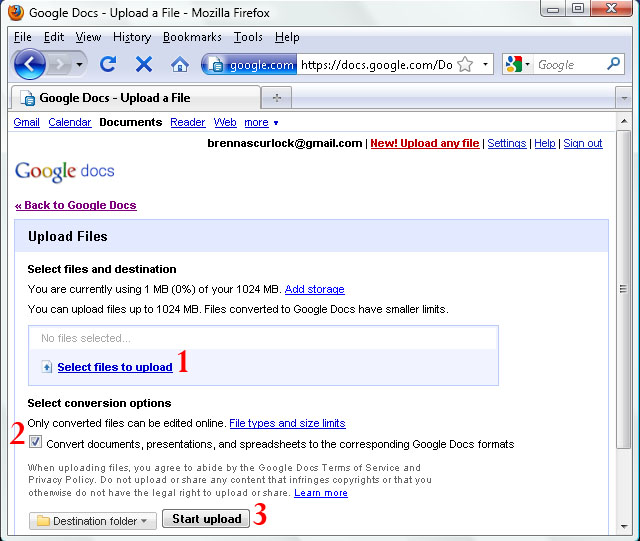

Part 3: Upload and store an existing document (or any file)
Google docs allows you to upload and edit your existing documents, presentations and spreadsheets. You can also upload and store any file type to Google docs.

1. Use this link to select files from your computer that you wish to upload
2. Uncheck this box if you do not want your file converted to Google doc format
3. When you're ready, click "Start upload" to begin
- From the main documents page, click the "upload" button (next to "create new") on the left side of the main documents page.
- Next, click "Select files to upload". This will open an explorer window to your documents (or whatever the default folder may be) so you can select which file on your system you wish to upload.
You may notice a checkbox beneath the upload area; if selected, this box will convert any word documents, slide shows or spreadsheets to Google format so that you can edit them online.
**If you only wish to store a file, you must uncheck this box.At this point, you can also select a specific folder where you would like the file to be placed.
- Once you have selected the file(s) you wish to upload, click "Start Upload." When your upload is finished, you should see the message "Upload complete."
- At this point, you can upload more files or return to your documents page by clicking the "Back to Google Docs" link beneath the Google logo at the top of the page.